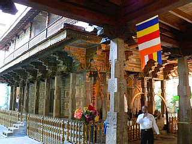

SriDaladaMaligawa(仏歯寺)/Kandy
スリランカ佛教最前線、いよいよフィナーレである。
締めは仏歯寺。
ここはお釈迦サマの歯を祀る寺で、スリランカを代表する寺院である。
そのお釈迦サマ（の歯）に無事大仏巡りが出来た事の報告とお礼を兼ねての参拝であることはいうまでもない。
ところでこの仏歯寺、「どこかで聞いたことがあるなあ」とお思いの貴兄も多かろう。
実は当サイトでもお馴染みの徳島県の正観寺や香川県の小豆島大観音などに仏舎利を分骨している寺なのだ。
もしかして珍寺好きのお寺なのかも知れない、というか仏歯寺自体が珍寺なのでは…と勝手に期待してみたものの、結果すごく真面目な寺で（当たり前だ）、たくさんの善男善女が参拝に訪れていた。
象さんもお参りに来るほどですから。
キャンディ市街の中心部の湖のほとりにある仏歯寺。
スリランカ仏教界の中心とでもいうべき超聖地である。
かつて自爆テロがあり、現在参拝者には厳重な荷物チェックが義務付けられている。
チェックが終わると今度は花を買う。
別に強制ではないですが、大仏巡りの報告とお礼をしに来た身としては是非花のひとつも供えたいものである。
蓮の花はおじさんがひとつひとつ花びらを開いて水に浮かべてある。
で、いよいよ内部に。
階段の蹴上一段一段に彫刻が施されていた。
内部。赤と黄色のいかにもスリランカらしいペイント。左右にはなぜか特盛りのご飯を持ったオジサンの絵がズラリと。
建物に囲まれた中庭のような場所に仏歯が納められている廟がある。
装飾が一際激しく、仏歯だけに象牙がアーチのように掲げられているのを見ても、この廟が特に重要な場所であることを示している。
入口には品の良さげな門番がおり、不審者が乱入してこないように目を光らせている（のだと思う）。
スリランカ仏教の聖域中の聖域だけに、他のお寺にはない緊張感が漂っている。
仏歯を納めているからというよりも、テロを警戒するがゆえの緊張感である。
そんなところにもこの国の現状が窺えるような気がする。
しばらくするとおもむろに楽器を携えた人達がやってきて演奏を始めた。
これはプージャーといってこの廟の開帳（といっても現物が見られるわけではないようだが）の知らせだ。
すると様々な供え物を持った人達が一人づつ廟に入っていく。
どうやらこの人達だけが仏歯に近づけるようだ。
独特の粘り気のある音楽の流れる中、次々と供え物を持った人達が入れ代わり立ち代り廟に入っていく。
その度に門番の人が扉を開け閉め。で、その度に中の様子を窺うのだが、中はどうなっているのか良く判りませんでした。
一般の人達はこの廟の2階の部分に参拝出来る。廟の正面に立つ建物の階段を上り2階へ。

そこには既に大勢の参拝者が並んでいたので、一緒に並んでみる。
係の人がさかんに廟の内部は撮影禁止である由を伝えている。
ここは是非とも隠し撮りをしてでもカメラに納めたかったのだが、撮影した瞬間に銃殺されそうな緊迫感だったのでやめときました。
中はどんなだったかというと…後ろの人にかなりせかされたので良く見えませんでした…
廟の前ではたくさんの人達がマジ拝み。
普段、日本ではリラックスしてお寺に赴くワタシだが、ここの人達の鬼気迫る参拝風景にはかなり違和感を覚えた。
いや、ここだけではない。スリランカのどこの寺に行っても日本のような「寺でも行ってのんびりするか」というノリは全く感じられなかったように思える。もちろん上座仏教と大乗仏教の差はあるのだろうが、同じ上座部仏教でもタイやミャンマーとも違うピンと張り詰めた空気が充満しているような気がしたのだ。
見た目、結構ポンチな感じなんですけどねえ。
寺の一画にはカーテンで目隠しされた小部屋がある。
入ってみると何体かの仏像が配されている。こんな感じです。
こんな素敵なイラストも。人買い？目が腐った魚のようなので何を表現したいのか全くわかりません。
あ、そういえばあまりにもせわしなくて大仏巡りの報告をお釈迦サマにするのを忘れてた！
…じゃ、とりあえずこっちのお釈迦サマに報告しとくか…
「スリランカで大仏ばっかり見てきました。面白かったです。これもお釈迦サマの御威徳のおかげです。これからもその御威徳をもって現世の者共にバンバン大仏を作らせちゃって下さい。特に日本辺りにどうでしょう…」
そんなこんなでメインの仏殿の参拝完了。
お次は仏歯の納められている廟の後にある建物に移動する。
ここは後世にタイの信徒がつくったそうで内部もバッチリタイ様式。
仏像もなで肩で面長のタイ仏である。
壁の両脇には仏歯がこの寺に来た由緒などを記した絵がズラリと並んでいる。
そして２、３階は博物館。
歴代の寺主の肖像画や寺宝、仏具などかなり見ごたえがあった。
でも一番面白かったのはドアの金具。全部のドアがこの金具でした。
あと、面白かったのはこのイラスト。
新手のシンクロのリフティングみたいですね。
結局、聖なる仏歯を見に行っても印象に残っているのはこんなのばっか。
つくづく俺は因果者だなあ〜、と思い知らされた聖地への参拝であった。
それではこの辺でスリランカ佛教最前線、お開きということで。
おしまい